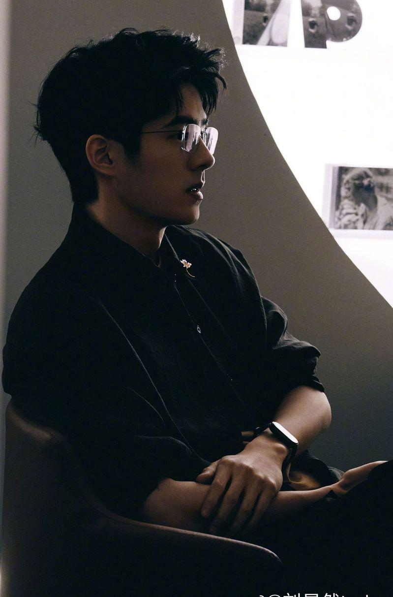
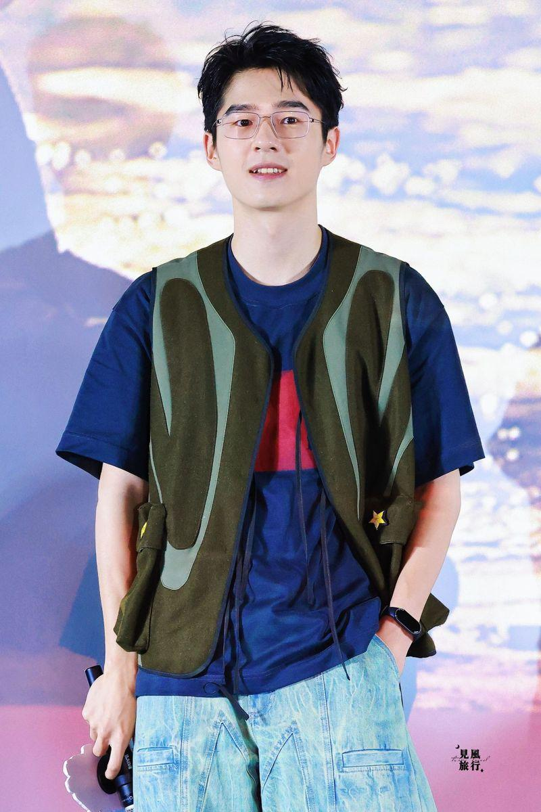

电影「解密」7日路演活动，主角刘昊然与粉丝合照时，主持人打趣说大家的脸都被照得红扑扑的，刘昊然回应说「脸红了没事别紫了就好」，巧妙调侃最近备受关注的奥运游泳选手「脸色」事件，话题迅速在微博引发热烈讨论，网友打趣：「也看奥运是吧」。
「解密」讲述中外密码战的故事，展现动人的家国情怀，刘昊然在宣传电影的同时，也表达对奥运赛事的关注；不过相关话题、评论可能太过敏感，一些门户网站相继删除留言或屏蔽话题。
巴黎奥运中国游泳队被频繁药检，让中国网友炸锅，怒批美国游泳选手赛后个个脸红成「紫薯队」，相关单位不去查美国选手是否用了禁药，连复旦大学教授沈逸都直指药检已成为西方霸凌中国的武器，#美国队脸紫#一话题曾登上微博热搜。
「解密」路演活动当天，活动进行到合照环节，面对因舞台灯光照射，现场人员显得面色泛红，主持人打趣说大家的脸都被照得红扑扑的，刘昊然在合照结束后，风趣地接了一句：「脸红倒没什么，只要别变成紫色就好。」让人不禁想起巴黎奥运美国游泳队选手脸部颜色「异常」的情况。
现场观众似乎没有立即领会到刘昊然这个哏，但这句话还是通过网络传播开来，引起广泛的关注和讨论；网友们纷纷表示，刘昊然的幽默感十足，「内涵还得靠我昊然弟弟」，还有网友评论：「紧跟时事啊」。
